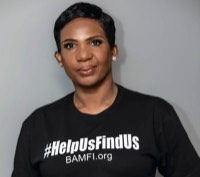

The Associated Press
22 people whose festival biography mentions The Associated Press. A mention can mean a job, a past job, a grant, a broadcast or an award: read the bio for which.

 Michael RezendesPanelist, moderator, workshop leader · 3 editions, 2015–2023
Michael RezendesPanelist, moderator, workshop leader · 3 editions, 2015–2023
 Poh Si TengPanelist, workshop leader · 2 editions, 2018–2021
Poh Si TengPanelist, workshop leader · 2 editions, 2018–2021 Jesse DamianiPanelist · 2021
Jesse DamianiPanelist · 2021 Lance DixonPanelist · 2021
Lance DixonPanelist · 2021 Nathan HalversonFilm subject, panelist · 2022
Nathan HalversonFilm subject, panelist · 2022

 Claritza JiménezFestival team · 2015
Claritza JiménezFestival team · 2015 Dan MericaModerator · 2024
Dan MericaModerator · 2024
 Arionne Nettles2021
Arionne Nettles2021- Sacha PfeifferPanelist · 2015

 Brian WestleyPanelist · 2021
Brian WestleyPanelist · 2021